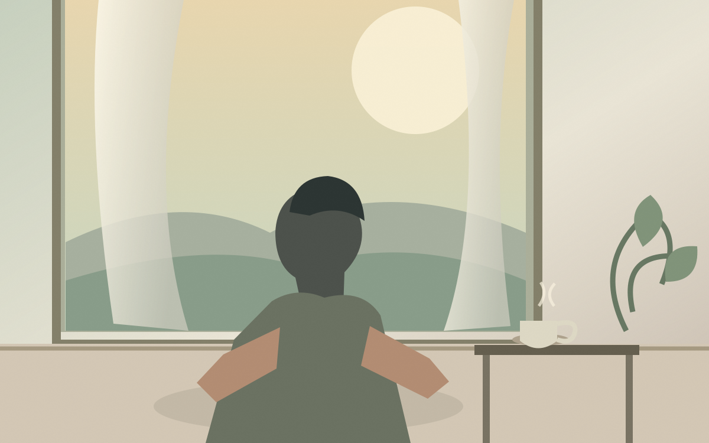

DIRECTION A · EXPRESSIVE EDITORIAL
The Living Issue
A bold, expressive digital magazine inspired by independent print design. Strong image and headline hierarchy; quieter, readable long-form pages.
One real editorial voice. Three visual worlds. Each prototype contains a complete homepage, an original cover illustration and the same full-length essay, so we can judge which reading experience feels right.
A bold, expressive digital magazine inspired by independent print design. Strong image and headline hierarchy; quieter, readable long-form pages.

Warm cinematic storytelling, spacious typography and calm image transitions. A reading-first design for thoughtful essays and intimate discoveries.

Graphic play, memorable covers and one meaningful interactive choice. Serious ideas made exploratory without turning reading into a game.
The existing magazine remains at GOOD QUESTION · The Slow Edition. These prototypes are self-contained and are not intended for search indexing.